4.2 Visualizing data distributions
Probability distributions are mathematical functions that describe the way that values vary randomly. This is a key idea in statistics and data analysis. We usually consider data to be essentially random, but with the values forming predictable patterns over many observations. The nature of those patterns is what probability distributions attempt to model. A probability distribution does not tell us the value of any particular observation, but it does let us estimate the likelihood of observing any particular value. The figure below demonstrates some common probability distributions: the heights of the bars reflect the likelihood of the values on the x-axes occuring under those distributions.

Successful data analysis requires paying attention to and thinking deeply about the way that your data are distributed. Different kinds of biological processes, like counts, waiting times, measurements, etc., have randomness that is described by different probability distributions. The assumption that values follow certain distributions is baked into most statistical methods. Trying to use a method that assumes an inappropriate distribution will probably lead to invalid results. For example, if you try to analyze count data as if they came from a continuous, unbounded distribution, your statistical model could predict nonsensical outcomes such as negative or non-integer counts. The figure below shows this:

Sometimes it is not always obvious what distribution your data should follow. Some cases are relatively straight forward: counts should follow a Poisson or negative binomial distribution. Other cases are less straightforward: should expression data be considered normally, log-normally, or some other-ly distributed? Usually there is a clear a priori answer to this question that can be obtained by thinking about what kind of process gave rise to the numbers.
A related question to “what distribution does my data follow?” is “do my data follow this distribution?” Even if you have some expectation of how your data should be distributed, that is no guarantee that your study system cooperated. You should always check to see if your data follow the distribution you assumed, and the distribution assumed by your statistical test. Deciding what distribution your data follow is always somewhat subjective, and real datasets often contain some departure from expectations. In this section we will explore some graphical techniques and heuristics for determining how data are distributed.
Knowing about data distributions is a one thing, but figuring out which distribution best fits your data is quite another. Like much of the data analysis workflow, picking a distribution can be as much an art as it is a science. This is because distributions of real data are often messy, or do not conform exactly to any one distribution, or may conform partly to several! Sometimes the answer to “what distribution should I use to analyze this data?” is not clear-cut. The figure below gives a (very) rough guide to starting to identify a response distribution. Note that this is only a guide for where to look first, and not a definitive guide to selecting a response distribution. Even if your choices lead you to, say, the normal distribution, you must still verify that your data conform (at least roughly) to that distribution. Note also that this diagram does not include every distribution out there, but rather a select set of commonly encountered distributions in biology.

4.2.1 Boxplots (aka: box-and-whisker plots)
Boxplots, or box-and-whisker plots, summarize the distribution of continuous variables. They are often used to summarize data by a factor, making it easier to see how the distribution of a variable differs between groups. The boxplot shows extreme values (whiskers), the first and third quartiles, and the median.
Boxplot of a single variable:
boxplot(iris$Petal.Width)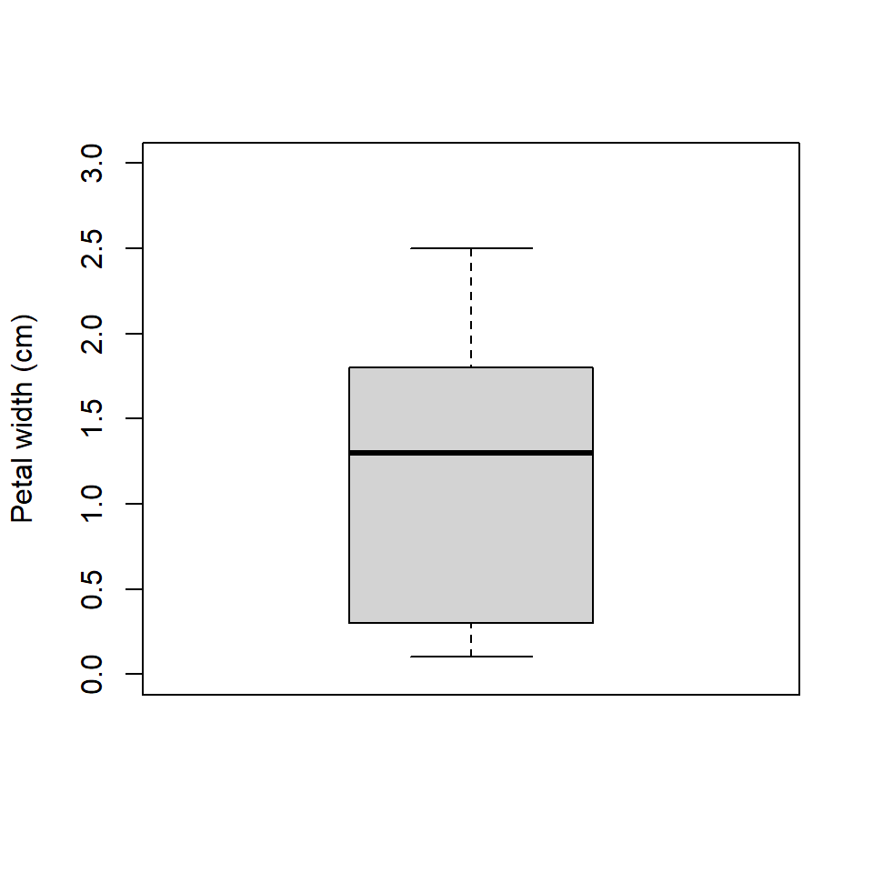
Boxplot with some options for a nicer plot:
boxplot(iris$Petal.Width,
ylab="Petal width (cm)",
ylim=c(0,3))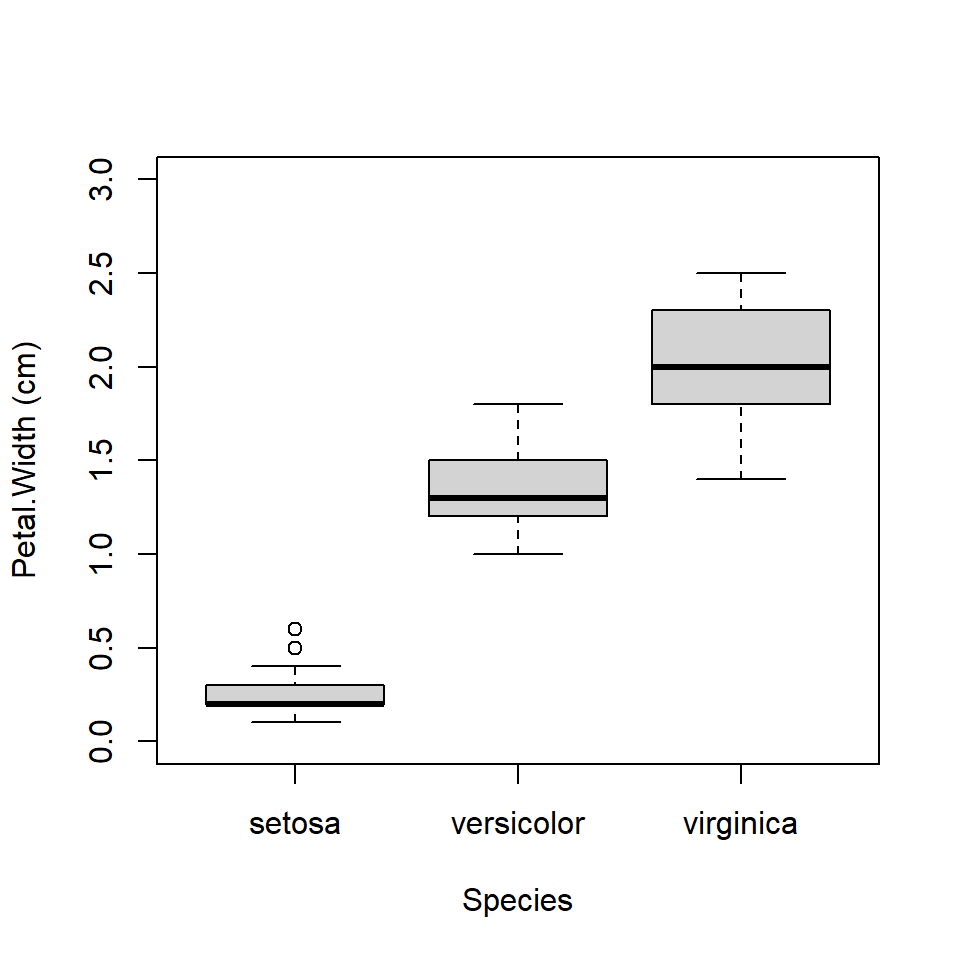
Boxplot across levels of a factor (note formula interface):
boxplot(iris$Petal.Width~iris$Species,
xlab="Species",
ylab="Petal.Width (cm)",
ylim=c(0,3))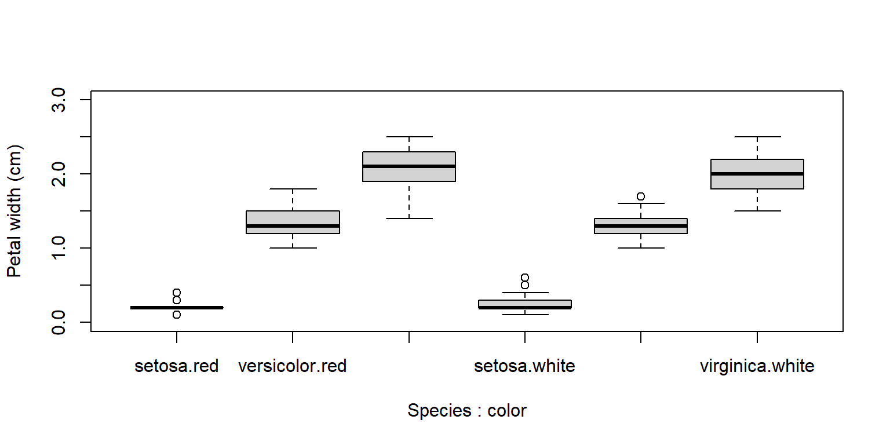
A highly asymmetric box-and-whisker plot can indicate that data are skewed or non-normal.
The base boxplot() function can produce summaries across multiple variables. Essentially it treats each combination of grouping variables as a separate set of values. There are better ways to plot group differences (e.g., for publication), but the base boxplot() does just fine for data exploration.
Boxplots can be constructed using several grouping variables. The order of grouping variables in the formula will determine the order of boxes in the plot.
x <- iris
x$color <- c("red", "white") #made up variable
# group by species and color:
boxplot(Petal.Width~Species+color, data=x,
ylab="Petal width (cm)", ylim=c(0,3))
# notice difference in order of grouping:
boxplot(Petal.Width~color+Species, data=x,
ylab="Petal width (cm)", ylim=c(0,3))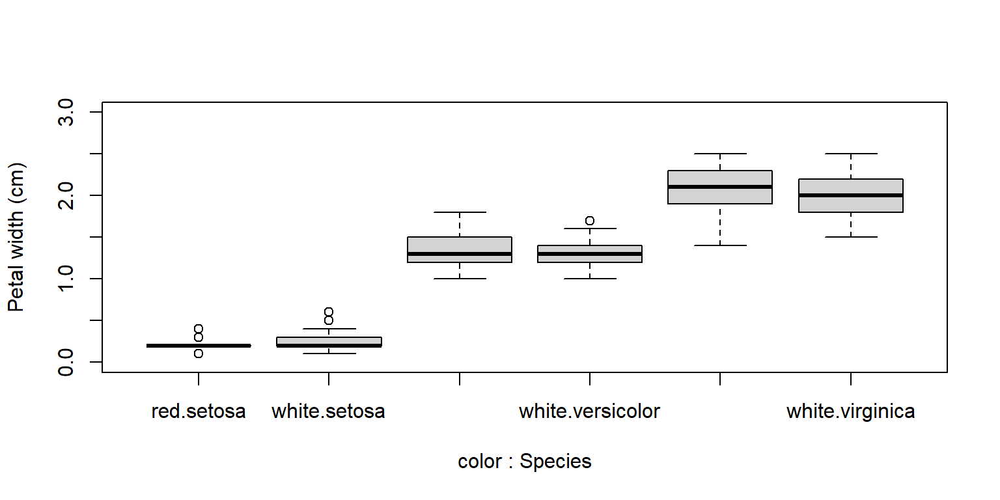
4.2.2 Histograms
Histograms show how values of a distribution are spread across different intervals. These intervals are sometimes called cells or bins. A good histogram will show, approximately, the shape of a probability density function (PDF) or the probability mass function (PMF). The base function hist() will automatically select intervals that look nice, but you can specify the intervals with argument breaks.
x <- rnorm(100)
par(mfrow=c(1,2))
hist(x)
hist(x, breaks=seq(-4, 4, by=0.5))
# reset
par(mfrow=c(1,1))The area of each bar is also proportional to the number of values in each interval.
R histograms can be presented as counts (freq=TRUE, the default), or as probability density (freq=FALSE). We’ll talk more about probability density later in the next section.
Compare these results:
par(mfrow=c(1,2))
hist(x)
hist(x, freq=FALSE)
# reset
par(mfrow=c(1,1))Because the second histogram shows probability densities, the areas under the bars sum to 1 (this is part of the definition of a PDF).
A histogram can provide a visual first clue as to the shape of a distribution’s PDF or PMF. For example, the histograms of x1 and x2 below suggest very different distributions:

Notice that x1 appears roughly normal. It is symmetric, has a bell-shape, and is concentrated near its center. Contrast this with x2. Distribution x2 is strongly right-skewed (i.e., lots of small values with a long positive tail), with most values near 0. It also has no negative values (range(x2)). Because of these properties we might suspect that x2 is really a log-normal distribution. We can check this by making a histogram of the log of x2:
 Other distributions might be tricky. Consider the histograms below:
Other distributions might be tricky. Consider the histograms below:

What a mess! Histogram x3 shows what is commonly referred to as a bimodal distribution. This is a distribution with two modes, or most common values, with a gap between them. Bimodal distributions often arise from a mixture of two distributions (in this case, two normals). Or, they can indicate that something in the data generating process leads to diverging outcomes. For example, in many college courses the grade distribution can be bimodal, with most students making either a B or D.
Histogram x4 shows a distribution with some right skew, but not the long, tapering tail characteristic of the lognormal distribution (see x2, above). The fact that the mean is near 5 and not 0 is another point against a lognormal. But the clincher is that there are negative values, which a lognormal distribution cannot take (think about why this is). Think for a few minutes about what distribution x4 might be, then click the footnote to find out32.
4.2.3 Kernel density plots
Kernel density plots are a way to empirically estimate the probability distribution function (PDF) of a distribution. A plot of the estimated PDF is essentially a smoothed histogram (technically, it is the heights of a histogram as the bin width approaches 0).
The PDF tells us two things. Practically speaking, the PDF of a distribution at a given value is related to how likely that value is to occur relative to other values. However, that is NOT a probability of that value occurring. What the PDF really expresses is the rate of change in cumulative density at a value. In other words, the PDF is the slope or first derivative of the CDF. Conversely, the CDF is the integral of the PDF. The PDF is the rate at which the probability of observing a value \(\le\) x increases at each x. Again, this is related to but not the same as the probability of that value occurring.

The kernel density plot is to the PDF what the ECDF is to the CDF. Just like an ECDF plot presents an estimate of the true CDF, the kernel density plot presents an estimate of the true PDF. This means that presenting a kernel density plot or an ECDF plot is largely a matter of preference because they convey the same information in different ways.
Note that a kernel density plot makes more sense for a continuous distribution than for a discrete distribution. The equivalent plot for a discrete distribution is the probability mass function (PMF) plot. The PMF of a discrete distribution is 0 for any non-integer value. The example below shows kernel density plots for four distributions: Normal(mean=5, SD=2), Gamma(k=3, \(\theta\)=2), Uniform(min=0, max=1), and Poisson(\(\lambda\)=4). The first 3 are continuous distributions and the last is a discrete distribution.
set.seed(123)
n <- 1e3
par(mfrow=c(2,2))
plot(density(rnorm(n,5,2)))
plot(density(rgamma(n, 3, 2)))
plot(density(runif(n)))
plot(density(rpois(n,4)))
The estimated density functions aren’t too far off from the real functions. But, notice that the plots for the gamma, uniform, and Poisson variables extend outside of the domains of the underlying distributions. For example, the density for the Poisson variable extends below 0. You can truncate the plot using arguments from or to for density. This is a good idea if you are exploring data that you suspect have a natural domain. For example, lengths and times must be non-negative, so you should include from=0 in the density() command.
par(mfrow=c(2,2))
plot(density(rnorm(n,5,2)))
plot(density(rgamma(n, 3, 2), from=0))
plot(density(runif(n), from=0, to=1))
plot(density(rpois(n,4), from=0))
The estimated density functions are now in their supported intervals, which is nice. There’s one more issue with the estimates for the Poisson distribution. Notice that the bottom right plot shows non-zero probability density for non-integer values. This doesn’t make sense for a Poisson distribution, which can only take non-negative integer values. What’s going on here is that the density() function does not know whether a distribution is supposed to be discrete or continuous. As far as the function is concerned, the distribution is continuous and just happens to have no non-integer values.
If you have data that you have good reason to suspect are discrete, there is a better way than density() to visualize the relative likelihood of different values: the probability mass function (PMF, not PDF). The PMF of a discrete distribution can be calculated rather than estimated. In the example below we use the table() function, which tallies up the number of times each value occurs in a vector. We could convert the cell counts to PMF estimates by dividing by the number of observations (e.g., plot(table(x1)/n)).
# make some data
set.seed(42)
n <- 1e3
x1 <- rpois(n, 4)
x2 <- rbinom(n, 20, 0.4)
x3 <- rgeom(n, 0.3)
x4 <- rnbinom(n, 10, 0.1)
# plot cell counts:
par(mfrow=c(2,2))
plot(table(x1))
plot(table(x2))
plot(table(x3))
plot(table(x4))
Dividing the cell counts by the number of total observations (n) estimates the empirical PMF:
par(mfrow=c(2,2))
plot(table(x1)/n)
plot(table(x2)/n)
plot(table(x3)/n)
plot(table(x4)/n)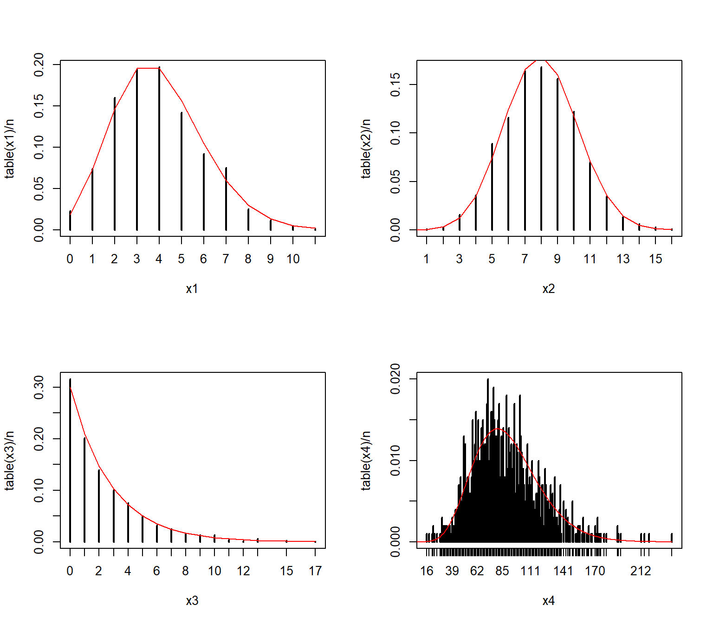
We can verify that the empirical PMFs that we calculated match the actual PMFs:
# compare to true PMF:
v1 <- 0:max(x1)
v2 <- 0:max(x2)
v3 <- 0:max(x3)
v4 <- 0:max(x4)
y1 <- dpois(v1, 4)
y2 <- dbinom(v2, 20, 0.4)
y3 <- dgeom(v3, 0.3)
y4 <- dnbinom(v4, 10, 0.1)
par(mfrow=c(2,2))
plot(table(x1)/n)
points(v1, y1, type="l", col="red")
plot(table(x2)/n)
points(v2, y2, type="l", col="red")
plot(table(x3)/n)
points(v3, y3, type="l", col="red")
plot(table(x4)/n)
points(v4, y4, type="l", col="red")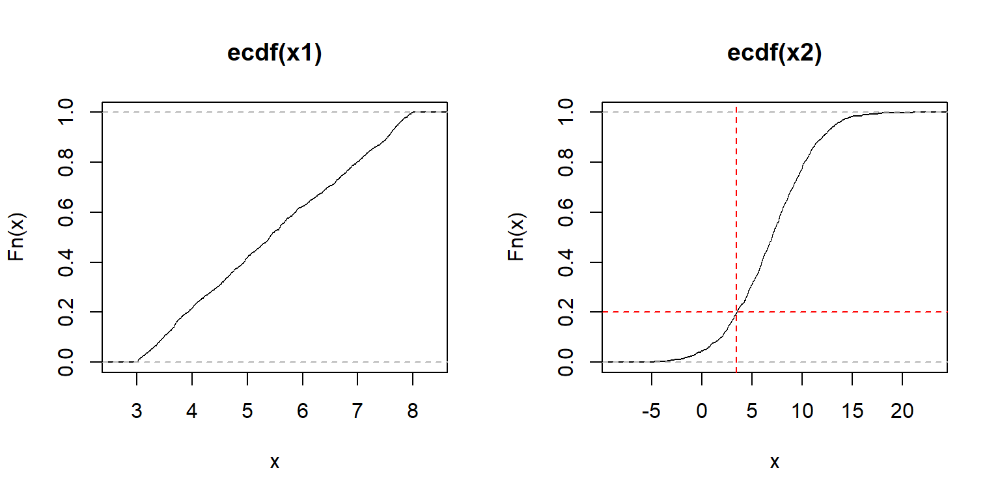
4.2.4 Empirical cumulative distribution plots (ECDF)
The cumulative distribution function (CDF) is the probability that a random variable will take on a value less than or equal to some value. Formally, we say that a continuous distribution X will take on value \(\le\) x with probability \(F(x)\). The CDF is \(F(x)\).The figure below shows what this means.

The figure shows the CDF of a normal distribution with mean = 0 and SD = 1 (i.e., the standard normal distribution. Like all CDFs, \(F(x)\) increases monotonically (never decreasing) from 0 to 1 as x increases from the lower bound to the upper bound of the distribution. In the case of the normal distribution, the bounds of x are [-\(\infty\), +\(\infty\)]. The CDF approaches 0 as x decreases, and approaches 1 as x increases. The red dashed lines show how to interpret the relationship between the axes. For any value on the x-axis, the y-axis shows what proportion of values are \(\le\) x. For any value on the y-axis, the x-axis shows the value at the y-th quantile of the distribution.
The CDF is in a very real sense the definition of a probability distribution. Every probability distribution can be identified by a unique CDF. It doesn’t matter whether a distribution is continuous, discrete, or a mixture of both. The figure below shows what the CDFs of a discrete or mixed distribution look like compared to that of a continuous distribution33.

The examples below calculate and plot ECDF plots for a uniform (left) and a normal distribution (right).
set.seed(42)
n <- 1e3
x1 <- runif(n, 3, 8)
x2 <- rnorm(n, 7, 4)
par(mfrow=c(1,2))
plot(ecdf(x1))
plot(ecdf(x2))
# add lines at 20th percentile:
abline(h=0.2, lty=2, col="red")
abline(v=quantile(x2, 0.2), lty=2, col="red")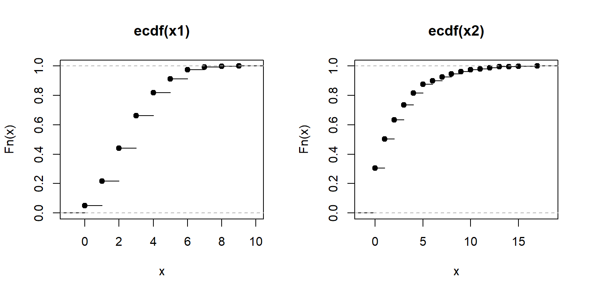
The y-axis of an ECDF plot shows the calculated quantile of the distribution (e.g., 0.4 quantile = 40th percentile \(\equiv\) 40% of x are \(\le F(x)\)). The x-axis shows the values of the distribution. In the left plot, we see that the slope of the ECDF plot is roughly constant. This suggests a uniform distribution. The plot on the right shows the S-shaped ECDF typical of a bell-shaped curve, so we might suspect a normal distribution. The red lines on the right plot illustrate that about 20% of values are \(\le\) 3.6.
ECDF plots can be calculated for discrete distributions as well—they just look like step functions. Step-like ECDF plots can also appear when a continuous distribution has many more observations than unique values.
set.seed(42)
n <- 1e3
x1 <- rpois(n, 3) # Poisson
x2 <- rgeom(n, 0.3) # geometric
par(mfrow=c(1,2))
plot(ecdf(x1))
plot(ecdf(x2))
Recall that every result in R is an object. The output of the function ecdf() is actually another function that calculates the estimated CDF for a new value. This can be very handy if you want to interpolate the ECDF to make a smoother curve.
class(ecdf(rnorm(100)))## [1] "ecdf" "stepfun" "function"Here is how to use it. The example below can be useful if you need to calculate the ECDF for values that are not in the original dataset, but within its domain. In the example below, the ECDF is estimated for x = 30, which is not in the original data x. Notice what happens for values in x1 that are greater than max(x) and less than min(x).
set.seed(123)
x <- rnorm(1e2, 20, 5)
e1 <- ecdf(x) # define function for CDF(x)
x1 <- 0:100 # define new x values at which to calculate CDF
y1 <- e1(x1) # calculate CDF at each new x
par(mfrow=c(1,1))
plot(x1, y1, type="s", lwd=2, col="blue2")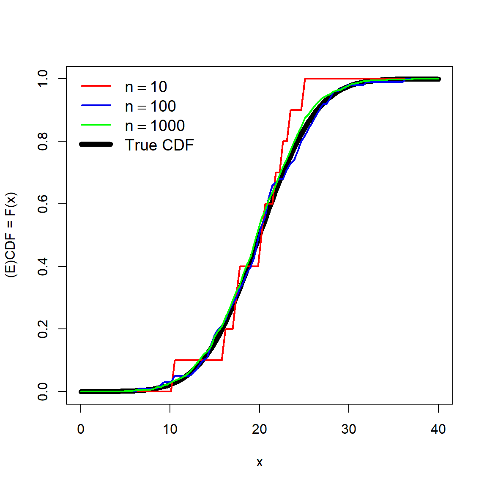
Obviously, the more data points you have, the better and smoother the estimate of the ECDF will be. Consider the simulated example below that estimates the ECDF using different numbers of points.
set.seed(123)
n <- 1e4
mu <- 20
sig <- 5
x4 <- rnorm(n, mu, sig)
x1 <- x4[sample(1:n, 10, replace=TRUE)]
x2 <- x4[sample(1:n, 100, replace=TRUE)]
x3 <- x4[sample(1:n, 1000, replace=TRUE)]
xseq <- seq(0, 40, length=100)
y1 <- ecdf(x1)(xseq)
y2 <- ecdf(x2)(xseq)
y3 <- ecdf(x3)(xseq)
yt <- pnorm(xseq, mu, sig)
plot(xseq, yt, type="l", lwd=6, xlab="x",
ylab="(E)CDF = F(x)")
points(xseq, y1, type="l", lwd=2, col="red")
points(xseq, y2, type="l", lwd=2, col="blue2")
points(xseq, y3, type="l", lwd=2, col="green")
legend("topleft",
legend=c(expression(n==10), expression(n==100),
expression(n==1000), "True CDF"),
lwd=c(2,2,2,6),
col=c("red", "blue2", "green", "black"),
bty="n", cex=1.2)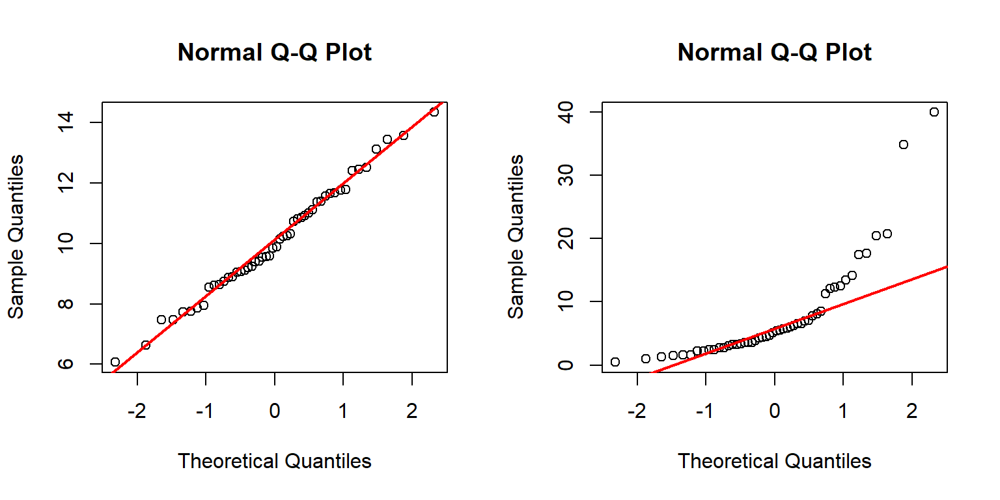
The estimate with 10 points (red) is a very rough fit, but serviceable. The estimates using 100 or 1000 points are much closer to the truth (black line).
4.2.5 Quantile-quantile (QQ) plots
A quantile-quantile plot, or QQ plot, is a method for visualizing whether two sets of values come from the same distribution. This is done by plotting the quantiles of one data set against the quantiles of another data set. If the two sets come from the same distribution, then the points should fall along a straight line. QQ plots are usually used to test whether data come from a normal distribution, but could be used with any distribution. The key advantage of QQ plots is that the reference line is straight, and deviations from it are easy to see. Contrast this with the reference line in an ECDF plot, whose shape varies by distribution.
QQ plots are generated by function qqplot() or qqnorm(). The latter function is a shortcut for a QQ plot comparing the data to a normal distribution. The function qqline() is used to add a reference line. Typical use of qqnorm() and qqline() is shown below.
set.seed(123)
a <- rnorm(50, 10, 2)
b <- rlnorm(50, 1.5, 1)
par(mfrow=c(1,2))
qqnorm(a)
qqline(a, col="red", lwd=2)
qqnorm(b)
qqline(b, col="red", lwd=2)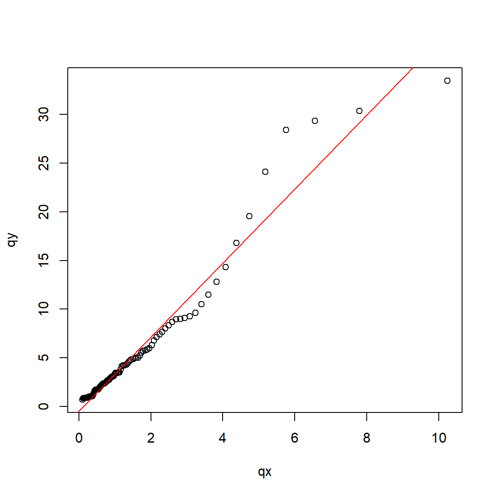
The left panel above shows that distribution a likely follows a normal distribution because the points fall mostly on the reference line. The right panel, however, shows that distribution b likely does not follow a normal distribution. This can be seen because many of the points do not fall on the line. The arch-shaped pattern indicates that the distribution differs from the normal mainly on the tails.
QQ plots can be made to compare your data to any arbitrary distribution. If your target distribution has default parameters in R (e.g., mean = 0 and SD = 1 for the normal distribution), then the method is simple:
x <- rlnorm(50, 1.5, 1)
qqs <- 1:99/100
qx <- qlnorm(qqs)
qy <- quantile(x, qqs)
par(mfrow=c(1,1))
plot(qx, qy)
abline(lm(qy~qx), col="red")
If the target distribution does not have default parameters, or if you don’t want to use the default parameters, you can still make a QQ plot. The example below shows two methods for comparing a suspected gamma distribution to a reference gamma distribution using QQ plots. The parameters of the reference gamma distribution are estimated using the function fitdistr() from package MASS.
library(MASS)
set.seed(123)
n <- 100
x <- rgamma(100, 4, 0.2)
fd <- fitdistr(x, "gamma")
qqs <- 1:99/100
# method 1: calculate QQ plot manually
qx <- qgamma(qqs, shape=fd$estimate[1], rate=fd$estimate[2])
qy <- quantile(x, qqs)
plot(qx, qy)
abline(lm(qy~qx), col="red")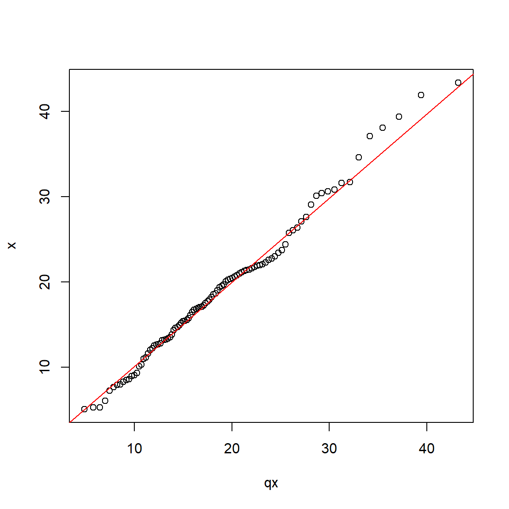
Here is an alternative strategy using qqplot():
# method 2: use qqplot()
# quantiles of reference distribution
# function to draw from reference distribution
dfun <- function(p){
qgamma(qqs, shape=fd$estimate[1], rate=fd$estimate[2])
}
# get values at each reference quantile
qx <- dfun(qqs)
# make plot
qqplot(qx, x)
abline(lm(qy~qx), col="red")
Here is another example with the negative binomial distribution:
library(MASS)
set.seed(123)
n <- 50
a <- rnbinom(n, mu=5, size=10)
# get parameters of distribution
fd <- fitdistr(a, "negative binomial")
fd## size mu
## 118.3001950 5.2000006
## (394.2399860) ( 0.3295018)# quantiles of reference distribution
qx <- ppoints(n)
# function to draw from reference distribution
dfun <- function(p){
qnbinom(p,
size=fd$estimate[1],
mu=fd$estimate[2])
}#function
# get values at each reference quantile
qy <- dfun(qx)
# make plot
qqplot(qy, a)
qqline(a, distribution=dfun, col="red")
4.2.6 How should I plot my data?
Plotting and examining the distribution of your data is always a good idea. How you plot the distributions is largely up to you. As mentioned above, histograms, ECDF plots, and kernel density plots convey the same information. The information is just presented in different ways. Some people prefer one kind of distribution plot over the others. You should use whichever plot best helps you understand the distribution. Or, use whichever plot your supervisor tells you to use. Consider the figure below, which plots a normal distribution with mean = 20 and SD = 5 in four different ways.
x <- rnorm(1e3, 20, 5)
par(mfrow=c(2,2), mar=c(5.1, 5.1, 1.1, 1.1),
bty="n", lend=1, las=1,
cex.axis=1.3, cex.lab=1.3, cex.main=1.3)
hist(x)
plot(density(x), main="Kernel density plot", lwd=3)
plot(ecdf(x), lwd=3)
qqnorm(x)
qqline(x, col="red", lwd=2)
Which way is the correct way to plot the data? It depends:
- If your goal is to show how the data are spread out, use a histogram or kernel density plot.
- If your goal is to explore quantiles of the distribution, use an ECDF plot.
- If your goal is to compare to a specific distribution, use a QQ plot or an ECDF (with the reference distribution’s CDF superimposed).
Methods for visualizing data distributions can be highly field-specific. Usually a histogram, ECDF, or both, will be enough to get a sense of how a variable is distributed. The goal of this visualization is usually to determine what probability distribution is most appropriate for a variable. As we will see in the next section, that can be as much a biological decision as a statistical one.